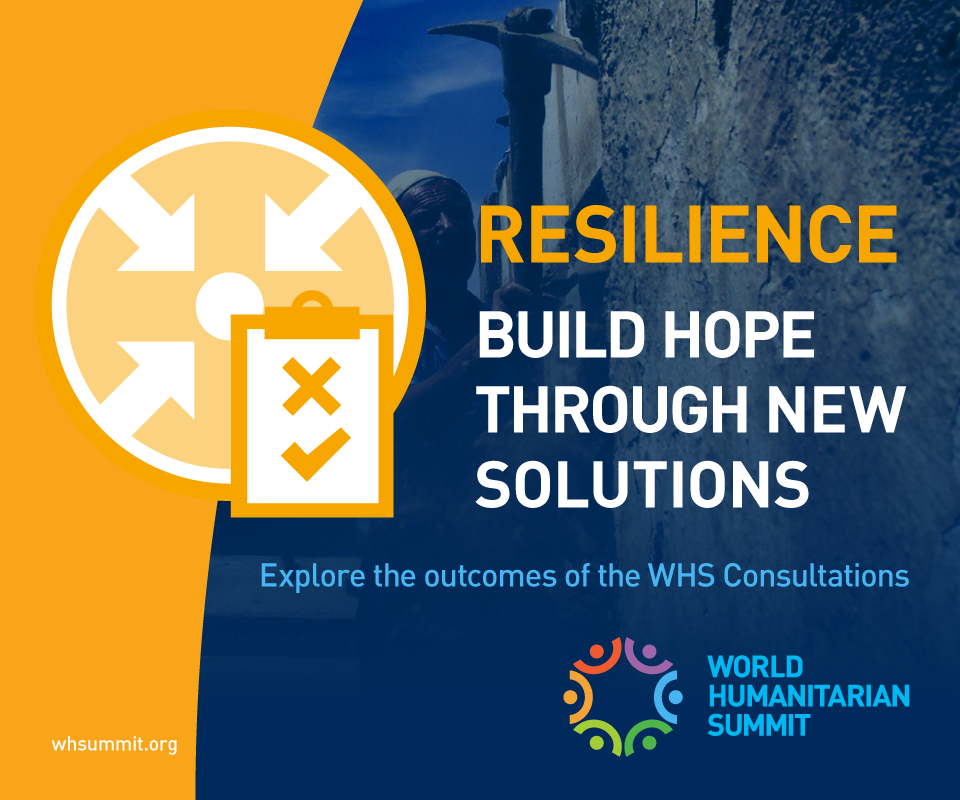
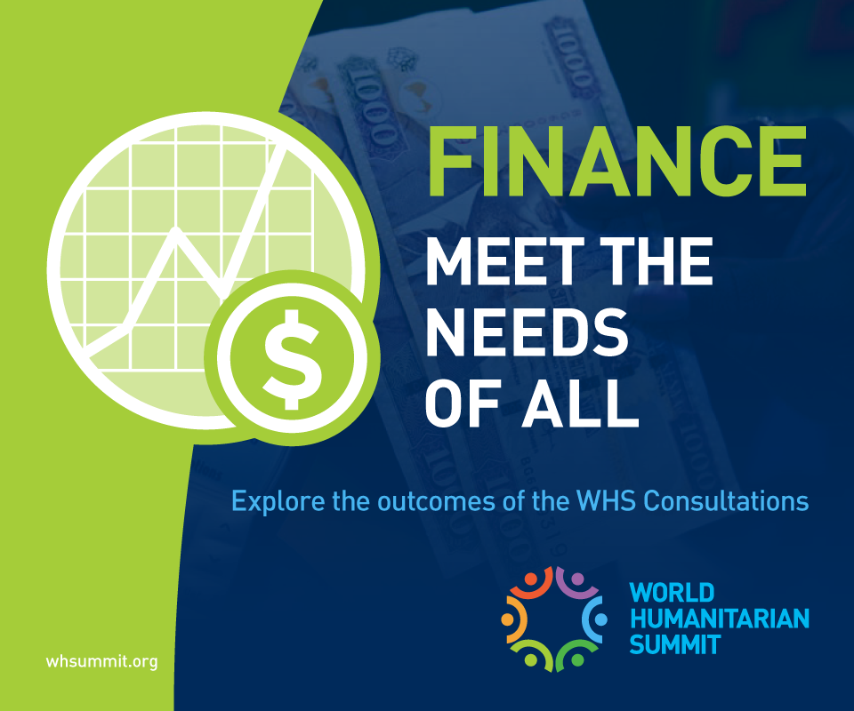

世界人道サミット：準備会合総合レポート
世界人道サミットが掲げるゴールは二つ。
一つは、われわれの人道支援に対するコミットメントに再び活力を呼び込み、
置き去りにされる恐れのある１億人もの人びとの苦しみを軽減させること。
そしてもう一つは、危機にさらされた国々やより良く備え、
また強靭さを発揮できるよう、具体的な行動を引き起こすこと。
―スティーブン・オブライアン人道問題担当国連事務次長―

世界人道サミット（World Humanitarian Summit: WHS）は、2016年5月にトルコのイスタンブールで開催されます。避難民の数が戦後最悪となる中、世界中で拡大する人道危機に対し、私たちがどのように立ち向かっていかなければならないのか。世界のリーダーや市民社会の代表などが一堂に会して話し合います。
出来るだけ多くの意見を集約するため、サミットに向けた準備会合がこれまで世界各地で開かれ、151か国から2万3,000人以上が集まって議論してきました。さらに5,500人もの人びとが、オンラインで意見を寄せています。そこで繰り返し強調されたのは、紛争や災害が悪化、長期化する中、最も弱い立場におかれた人びとを人道支援の中心に据えていくべきだということでした。
2015年10月14日には最後のグローバル準備会合がスイスのジュネーブで開かれ、これまでの議論と最新の人道危機状況を踏まえ、来年のWHS本番に向けた意見集約を行います。最後の準備会合に先立ち、これまでの議論をまとめた総合レポートが発表されましたので、その概要をお伝えします。全文はこちらをご覧下さい（英語）。
【要約】
武力紛争や大規模自然災害によって引き起こされる人びとの苦しみは、驚異的なレベルに達している。6,000万人もの人びと――うち半数は子どもである――が、紛争や暴力のために、住み慣れた土地から離れることを余儀なくされている。自然災害による人的、経済的損失も悪化の一途をたどっている。過去20年で、毎年2億1,800万人もの人びとがその影響を受け、世界経済に与える損失は1年当たり3,000億ドルを優に超える。
「誰も置き去りにしない」と世界中のリーダー達が誓っていようとも、人道危機における数百万人ものニーズや尊厳は現に顧みられていない。度重なる災害により、100万人もの人びとが生活の糧を取り戻す間もなく暮らしを破壊され、苦しんでいる。政治の機能不全によって武力紛争の根本原因や災害に対する脆弱性が放置され、助けを必要とする人たちに対してアクセスすることすら、妨げられている。
人道システムは多くの場所で、これまでになく多くの人びとにたどり着くことが出来ている。しかし、現在持っているリソースと支援の構造を前提にすると、将来のニーズはおろか、もはや現在直面している人道危機の規模や複雑さに対応することすら不可能だ。多額の資金援助にもかかわらず、いのちを救うための人道支援ニーズは年々増え続け、十分には満たされないままである。多様化し続ける、特に新興国や発展途上国の人道支援パートナーが持つ強みやスキルは必ずしも十分に活かされていない。変化し続ける科学技術の力もまた然りだ。
いのちを救い、人びとが尊厳ある暮らしを送るため、そして我々が共に負っている責任を果たすため、断固たる、団結した行動が今、必要とされている。
これらの理由により、潘基文・国連事務総長は史上初となる世界人道サミットを提唱した。世界人道サミットは、2016年5月23-24日にトルコのイスタンブールで開催される。紛争や災害の影響を受けている数百万人もの人びとのニーズをいかに満たすのか。世界人道サミットは独自の包摂的プロセスを通じて、新しいビジョンを提唱する、大切な機会となる。
また、世界人道サミット（WHS）は、かつてない変化が世界規模で起こる中、開かれる。減災（仙台、2015年3月）、持続的な開発（ニューヨーク、2015年9月）、気候変動（パリ、2015年12月）、都市の開発（キト、2016年10月）といった世界的枠組みが改められる動きの中に、WHSも位置づけられている。また、国連による平和構築のありかた（2015年6月）、国連平和維持活動（同）、女性・平和・安全保障に関するアジェンダ（2015年10月）、人道支援の資金調達に関するハイレベルパネル（2015年12月）、そして健康危機に対する世界的対応（2015年12月）、さらには第32回赤十字及び赤新月国際会議（2015年12月）といった直近の見直し作業の成果が活かされることになる。人道ニーズに応えるため、そしてリスクに包括的に対応するための新たな方法を模索することが、この世界的アジェンダを議論する上で特に重要な部分となってくる。
世界人道サミットは、危機にさらされた人々のいのちを救うという私たちが共有する責任をさらに強固なものとし、こうした人びとが苦しむような状況を防ぐ、或いは現実の苦しみを減らし、そして人間としての尊厳を守り抜くため、決定的な機会となる。そして国家や政府のトップ、多国間その他の団体、民間セクター、学界、そして人道危機の影響を受けているコミュニティの代表が一堂に会し、すべての人びとにとってより安全で人間性に溢れた世界を作り上げるため、将来に向けたアクションプランに対する支持を表明し、新たなパートナーシップを作り上げ、今日そして明日の人道課題に対する現実的な解決策を見出すことが求められている。
世界人道サミットに先立ち、2014年5月から2015年7月まで、8箇所で地域別準備会合が開かれ、23,000人以上がそこに関わった。また主要な分野別のステークホルダー会合とオンラインでの対話も行われ、400件以上の意見が提出された。これらで繰り返し指摘されたのは、月単位ではなくて年単位で危機が長引くのが常態となる中、いかにして危機に備え対応し、またそのために協働し、そして究極的にどのようにして暮らしやいのちが脅かされている何百万もの人々を救うか、そうした方法を変えていかなければならないという点だ。
この包摂的プロセスの結果、議論が必要な5つの分野にまとめ上げられ、それぞれが今後の人道支援活動における大きな目標を指し示している。世界人道サミットではこれらをたたき台として、それぞれのステークホルダーが、必要な変化を引き起こす上で求められている約束やパートナーシップ、行動計画などを作り出していくことになる。
【人間の尊厳】

- 被災者を人道支援活動の中心に据えるべきである。危機の影響を受けているコミュニティや、こうしたコミュニティで形成された団体こそ、備え、対応、復興の第一の当事者だと認識されるべきである。
- 人道危機の影響を受けている人びとは、人道支援に関してより大きな発言権と選択肢を与えられるべきである。双方向のコミュニケーションやフィードバック機能、現金ベースの支援などがこれらに含まれる。
- 人道支援活動は、女性にも公平に行うべきである。年齢や背景によって、女性特有の様々なニーズがあり、女性が性暴力から保護されることも含めて、様々なサービスや保護を受ける権利を実現できるような支援も必要である。
- 人道支援活動を通じて、子どもたちの保護と教育を確実にし、若者たちに仕事と生活の糧を得る機会を提供しなければならない。また若者たちが人道支援活動のパートナーであると認識すべきだ。人道危機や災害のために、子どもたちが１か月以上も学校に行けないようなことがあってはならない。
-
人道支援活動に関わる者は全て、高齢者や障がいを持った人びと、その他社会の隅に追いやられている人々がなおざりにされるような状態を正さなければならない。こうした人びとのニーズが満たされていることを確認し、意思決定に参加できるようにすべきである。
【安全】
- 人びとの尊厳と共に安全を護ることは、人道支援活動の第一の目的である。
- 武力紛争において、人道支援活動を政治解決の代替とみなしてはならない。国連加盟国と国際社会は紛争の根本原因に取り組み、予防、早期警戒及び外交努力、平和のための能力強化などを通じて、紛争終結につながる政治的アクションを起こすべきである。
- 紛争当事者は、国際人道法を遵守する義務を負っている。世界人道サミットは具体的な行動を通じて、国際人道法の精神を堅持し、その普遍的な履行を促すことを改めて確認する場である。
- 紛争下で苦しむ人びとが保護や支援を受けられるようにするため、人道原則に基づいた活動が求められる。長期化する紛争下においては、人道支援団体は長期的な戦略を立て、支援対象となる人びとの当面のニーズと合わせ、長期間のニーズにも対応しなければならない。
- 人道支援のリーダー達は、人びとの保護を優先して実施することに対して、多大な説明責任を負っている。人権侵害などが起きていないかチェックする態勢が整えられるべきであり、迅速な行動やアドボカシー活動とより一貫性を以てつなげていくべきである。
- エイド・ワーカーの安全向上は、優先事項である。武装グループ、地元社会のリーダー、政府などと信頼関係を構築することに加え、国際法で認められているエイド・ワーカーの安全に関する効果的なコミュニケーション、人道原則の堅持、さらにはスタッフが身の安全を確保するため十分なトレーニングを受けられるようにすることも求められている。
【強靭性（レジリエンス）】

新たなあるいは長期化する人道危機の最中にある人びとが希望や何らかの解決策を見出せるようにすることが必要だ。人道支援、開発、その他のパートナーとの団結した行動を起こし、リスクを管理して備えに投資し、脆弱性を減らし、長期化する避難生活に対して恒久的な解決法を見出し、また新たな脅威に対して適合していくことでそうしたことが可能となる。
- 長期化する人道危機への解決策を見出すため、人道支援、開発、気候変動と平和構築のアクターが協力する新たな枠組みが必要だ。この枠組みは、当面のいのちを救う活動と共に、問題の根本的原因を取り除くような長期的視野に立ったものでなければならない。
- 長期間の避難生活を送る人の数が急激に増加していることを鑑み、難民への支援と受入国やコミュニティのサポート態勢を根本的に変えていく必要がある。世界人道サミットでは、受入国が現在実施している支援をもとに、自立を図るための長期的な経済的支援など包括的な「難民受入れ態勢」について検討しなければならない。
- 長期間の避難生活を送る人の数が急激に増加していることを鑑み、難民への支援と受入国やコミュニティのサポート態勢を根本的に変えていく必要がある。世界人道サミットでは、受入国が現在実施している支援をもとに、自立を図るための長期的な経済的支援など包括的な「難民受入れ態勢」について検討しなければならない。
- 移民・難民の人道的側面について、こうした人々の人権やいのちを守るため、結束した力が必要とされている。また、国境付近など人びとが移動するルートに当たる地域の国際協力や、移民・難民・庇護申請者が流入している国々に対してもさらに支援が必要である。
- 政府は、脆弱性を減らすことや災害予防にさらに予算を投じるべきである。自然災害、とくに繰り返し起こり予見可能なものについては、実際に発生した後の危機をどう乗り切るかよりも、発生前からどのようにリスクに対処するかという考え方にシフトする必要がある。
- 各国政府は、国際社会と自然災害の「備えと対応に関する協定」を結ぶべきである。これにより、リスク削減と対応能力強化のための投資が行われ、また国際支援が求められる水準も明らかになることから、危機管理上の予見性と節度を高めることにつながる。
- 政府と開発パートナーは、持続可能な開発目標（Sustainable Development Goals: SGDs）で示された指標を達成することに加え、社会的な保護（social protection measures）の仕組みを増大させるべきである。こうした仕組みは特に都市部や長期化する紛争下でみられる問題を踏まえ、こうした仕組みは長期的視野に立ったサービスでなければならない。
- 政府や国際社会のアクターは、健康危機のリスクに対し、コミュニティ及び公衆衛生システムを強化して、迅速に対応できる態勢を整える必要がある。医療施設及び医療従事者の保護や、国境を越える感染症の流行への対処も然りである。
- 都市化が進む世界において、紛争や災害によってもたらされる影響が大きくなる中、都市における危機に関する地元自治体や専門家、人道及び開発アクターを含む世界的な協力関係を作るべきである。都市の特性に合ったより強じんな人びと、インフラ、システムに基づく対応機能を作り上げ、増大するリスクに対処していく必要がある。
- 新たに生じる脅威や将来の人道リスクに備え、各分野の専門家からなる独立した諮問グループを組織する必要がある。
【パートナーシップ】
核となる人道原則を堅持し、人びとを中心に据えた効果的な人道支援活動を支え、初動対応にあたる者のリーダーシップを尊重し、イノベーションの力を最大限に生かせるような、多様で包摂的なパートナーシップを築かなくてはならない。
- 全ての国々と人道支援関係者は、世界に共通する人道原則へのコミットメントを再度明言すべきである。すなわち、それは、人道、中立、公平、独立の原則であり、支援と保護は必要とする人全てに、いかなる差別もなく届けるということである。
- 国と地元地域が危機管理において担うリーダーシップと責任は、地域間協力と国際組織のサポートを受けながら可能な限り強化されるべきである。これを可能にするには、地元地域の対応キャパシティや協力態勢の見直し、パートナシップに基づいたより包摂的な意思決定の仕組みを作ることなどが含まれる。
- どのような危機状況においても、ニーズアセスメントの質と信頼性を確保もしくは高め、ニーズが満たされているか否かどうか進捗状況をたどり、そして被災者が苦情を申し立てることが出来るメカニズムが必要である。これらは独立を有し、現地の人びと、地元政府や市民社会、人道支援団体などの意見をよく聞くべきである。
- 透明性が確保され、信頼性の高い共有データに基づき、人道支援活動の質と効果を量るための世界共通の枠組みが必要とされている。
- 新たな課題に対峙し、被災者が抱えるニーズに適切に対応するため、人道システムとして学び続け新たなものを取り入れいく土壌を育て、またイノベーションを起こしていく機会を取り込んでいくことがきわめて重要である。
-
政府と人道支援関係者は、他の分野で見られる能力を最大限に生かすため新たなパートナーシップを築き上げるべきである。危機に備えた協定を民間セクターとあらかじめ結んでおくことなどがそれに当たる。
【資金】

人道危機において人々のいのち、尊厳と強靭性（レジリエンス）を守り抜くため、様々な新規の資金源を開拓すると同時に地元団体への支援を拡大し、より効率的かつ効果的なリソースの活用にあたる必要がある。
- 人道支援活動に、十分な資金が充てられるようにする必要がある。そうすることで、人びとの生命と尊厳を護るために不可欠な支援が保障される。人道支援ニーズを満たすためのコストが常に高い状況にあるため、先の見通せる資金を確保し、コミュニティの強靭性を高めることが喫緊の課題である。
- 資金不足は、あらゆる国内及び国際的な資金源から調達して埋め合わせなければならない。それぞれの状況に応じて、無駄や非効率があればこれらをさらに減らし、透明性と説明責任を高める必要がある。
- 地元組織へ直接的な資金援助を拡大するとともに、被災国政府の予算に対する直接的な予算支援やリスク金融サービスを増やすべきである。
-
人道危機下に伴う取引コストを低減し、海外送金に関する様々な障害を取り除かなければならない。また危機の発生後、銀行システムや通信サービスを早急に復旧させるべきである。資金の流れを確実にするため、海外送金や人道支援活動が対テロ法制の影響を受けないようにすべきだとする要請も出された。
世界人道サミット 準備会合総合レポート全文（英語）＞＞
世界人道サミットについて（日本語）＞＞